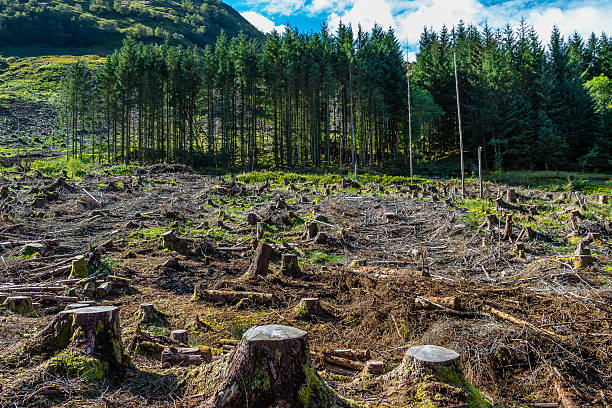

Deforestation
<-Back to About Page

What is Deforestation?
Deforestation is the large-scale removal of forests and trees from an area. It is usually carried out to
make space for agriculture, urban development, industries, and infrastructure projects. Deforestation is
one of the most significant environmental issues facing the world today.
Major Causes of Deforestation
- Expansion of agricultural land
- Logging for timber and wood products
- Urbanization and construction projects
- Mining activities
- Forest fires
- Overgrazing by livestock
Importance of Forests
Forests play a vital role in maintaining the balance of nature. They provide habitat for wildlife,
absorb carbon dioxide, produce oxygen, and help regulate the Earth's climate.
- Provide oxygen for living organisms
- Support biodiversity
- Prevent soil erosion
- Regulate rainfall patterns
- Store carbon and reduce global warming
Effects of Deforestation
The removal of forests has serious consequences for the environment and human society.
- Loss of wildlife habitats
- Decline in biodiversity
- Increased carbon dioxide levels
- Climate change and global warming
- Soil erosion and land degradation
- Increased risk of floods and droughts
Impact on Wildlife
Millions of animals depend on forests for food and shelter. When forests are destroyed, many species
lose their habitats and face the risk of extinction.
- Loss of natural homes
- Reduction in food sources
- Forced migration of animals
- Threatened and endangered species
Deforestation and Climate Change
Trees absorb carbon dioxide from the atmosphere. When forests are cut down, less carbon dioxide is
absorbed, and the stored carbon is released back into the atmosphere. This contributes to global warming
and climate change.
Ways to Reduce Deforestation
- Plant more trees through afforestation programs.
- Reduce the use of paper and wood products.
- Support sustainable forestry practices.
- Protect existing forests and wildlife reserves.
- Promote recycling of paper products.
- Prevent illegal logging activities.
- Raise awareness about forest conservation.
What Students Can Do
- Participate in tree-planting drives.
- Use paper responsibly.
- Spread awareness about forest conservation.
- Support environmental campaigns.
- Encourage others to protect nature.
Did You Know?
Forests cover about 31% of the Earth's land area and are home to more than 80% of the world's
terrestrial animals, plants, and insects.
Conclusion
Forests are essential for life on Earth. They provide clean air, protect wildlife, and help regulate the
climate. By conserving forests and planting more trees, we can help create a healthier and more
sustainable future for generations to come.